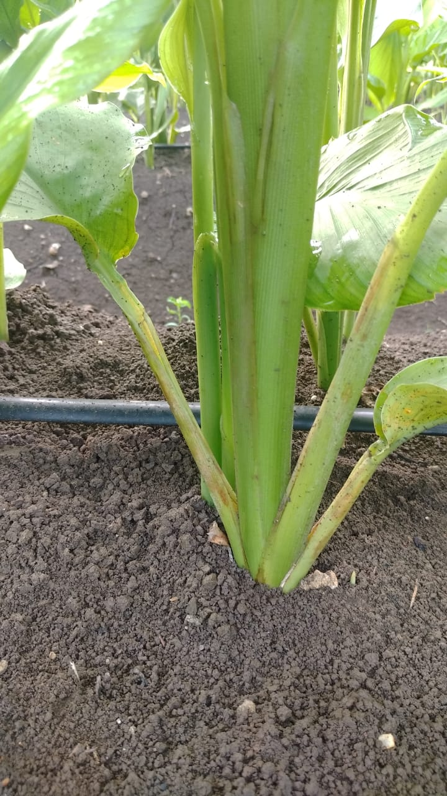
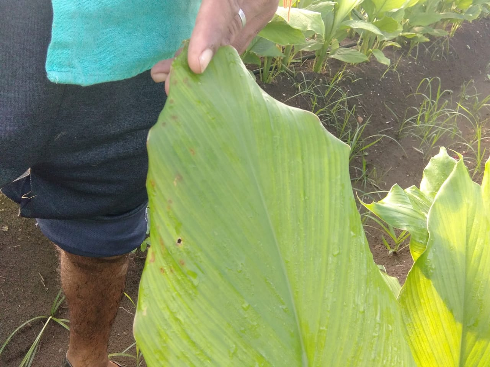
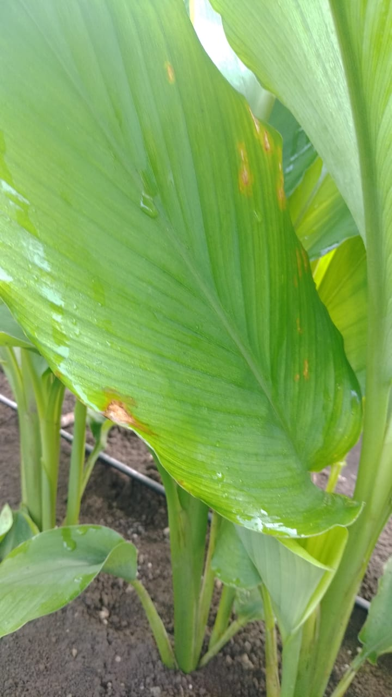
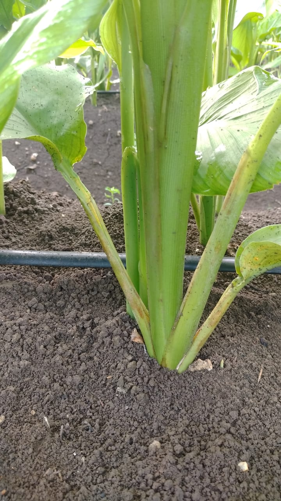
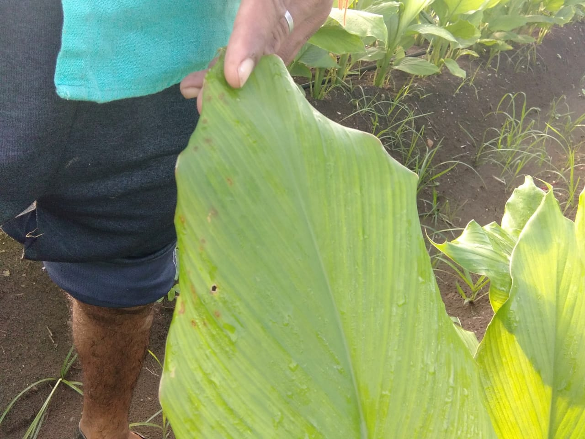
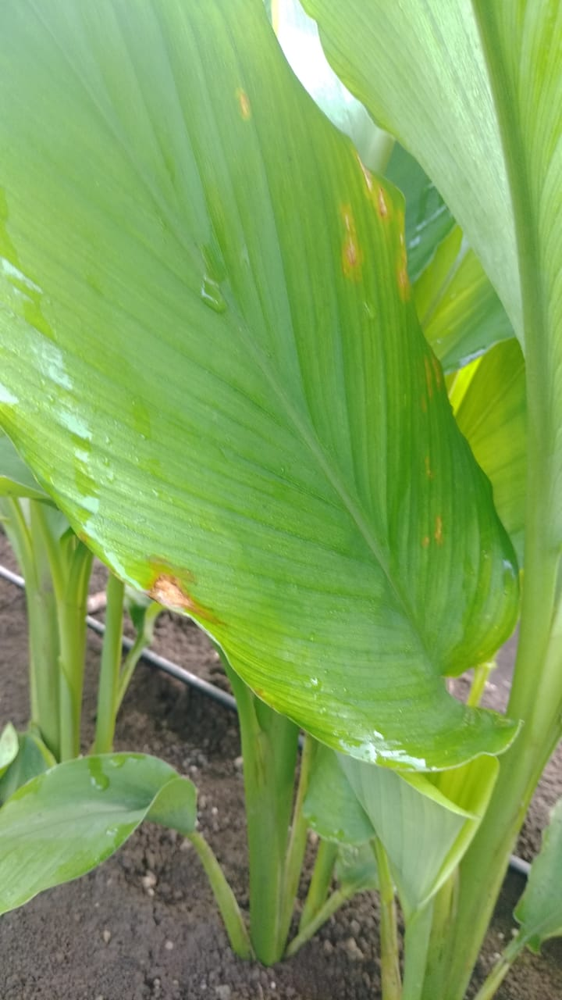

*हळदी वरिल येणारी किडी व अळी#
ऑगस्ट २५
1)कंदकूज ( मुळकूज) :-
👉 हळदीच्या खालील भाग हा पाणिदार व मऊ असतो.खालच्या पानाच्या टोकांची किनारे पिवळे होवून हळू हळू सुकून जातात...रोगीट कंद हे मऊ सडलेली तपकिरी रंगाची वेगवेगळ्या प्रकारची दिसतात.खालील भागातून वरच्या दिसेने पिवळसर पणा हळदीच्या सर्व पानावर पसरतो.व फुटवे पडून आणि सुकून मरूण जातात.....
##उपाय## :-
👉⭕रेडोमिल गोल्ड, रोको, काॅपर आॅक्सीक्लोराॅईड
2) खोड पोखरणारी अळी :-
👉आळ्या पोग्यात शिरतात आणि आतिल गाभा खातात परिणामी पाने पिवळी होवून सुकून जातात .झाडाची फुटवे देखील सुकून जातात..
##उपाय## :-
👉⭕ रोगर 40 मि पंप , क्विनाॅलफाॅस 40 मि , क्लोरो 50 मि ., लेम्बडा सायहॅलोथ्रीन 20 मि .., निम तेल
3)खवले किड :-
👉हा किडा प्रोढ मादीच्या पेशीवर जगतात व हळदीच्या पेशीवरील चिकट पणा खातात तिथच हा किड गंभीर स्वरूपात होतात कंद सडवितात...पर्ण हळद सुकते...
##उपाय## :-
👉⭕ क्लोरो 40 मि ,रोगर
4) पानावरिल डाग (लीप ब्लाच) :-
👉 पानाच्या दोन्ही बाजूने खालून- वरूण दोन्ही बाजूला 2ते 2 से मि डाग अधिक संख्याने दिसून येतात ते डाग लालसर तपतिरी रंगाची पाने दिसतात.. हे डागाचे नियंञण नाही केले तर झाडे वाळू गेल्यासारखी होतात...
##उपाय## :-
👉⭕एझोक्सिस्ट्राबीन + डायफेनकोनाझल (स्कोर) आॅमिस्टार टाॅप , एम -45 ,केवीट , नेटीवो, सुडोमोनास.....
5) पाने गुंडाळणारी अळी :-
👉अळ्या पाने कातरतात व गुडाळतात ते पाना मध्ये गुडाळ्या मुळे अन्नद्रव्ये करण्याची अाडचण येते. परिणामी वाढीवर परिणाम होतो...
##उपाय## :-
👉⭕प्लाथुरा, प्रोक्लेम, निमतेल ,क्विनाल,
6)फुलकिडे :-
👉 फुलकिडे पानातील रस शोषून घेतात. व पानाचे नुकसान करतात ..हि किड नविन येणारे खोड या भागात करतात कवळी पानावर जास्त असतो.या मुळे पाने गुंडाळी जातात व नंतर फिकट पिवळी होवून हळूहळू सुकतात...
##उपाय## :-
👉⭕ रिजेंन्ट स्लेरप्रो, अलिका....
7)कंदमाशी :-
👉हि आळी कंदा मध्ये शिरून आतील गाभा खाते परिणामी हळद पिवळी पडून कंदकूज होते..सुरूवातीच्या प्रादुर्भावा मध्ये फुटवे पोकळ होतात पानासहित सुकून जातात. मरून जातात त्यात बारीक बरीक अळ्या पडतात.. व बुरशीचा शिरकाव होवून कंदकूजतात...
##उपाय## :-
👉⭕रोगर , क्विनाॅल, रिजेंट, रोको, सेंक्टीन एलिएट, काॅपर आॅक्सीक्लोराईड.....
 




